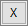
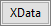
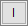
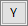
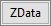
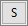

Das Fenster Dateninfo und der Tooltipp der Datenpunkte sind verwandte Funktionen, die ähnliche Dialoge verwenden, um ähnliche beschreibende Informationen über einen gezeichneten Datenpunkt anzuzeigen.
Im Bild unten haben wir einen Datensatz zu Automobilen, in dem Modelle verschiedener Hersteller über eine Anzahl von Jahren verglichen werden. Wir beginnen, indem wir eine Zeichnung von Power vs. Gas Mileage machen. Wir möchten eine kleine untersuchende Analyse mit Hilfe der sich ergebenden Zeichnung durchführen. Wir wählen Datenkoordinaten  auf der Symbolleiste Hilfsmittel und klicken auf einen Punkt im Diagramm, der ein bisschen wie ein Ausreißer aussieht. Das Fenster Dateninfo wird geöffnet und zeigt uns, dass wir einen Punkt in Zeile 334 in unserem Arbeitsblatt ausgewählt haben und dass er die Koordinaten X = 66 (Power) und Y = 36 (Gas Mileage) hat.
auf der Symbolleiste Hilfsmittel und klicken auf einen Punkt im Diagramm, der ein bisschen wie ein Ausreißer aussieht. Das Fenster Dateninfo wird geöffnet und zeigt uns, dass wir einen Punkt in Zeile 334 in unserem Arbeitsblatt ausgewählt haben und dass er die Koordinaten X = 66 (Power) und Y = 36 (Gas Mileage) hat.
Wenn wir zum Quellarbeitsblatt zurückkehren, sehen wir, dass Zeile 334 ein Modell des Herstellers a Saturn ist, Year = 2004, das die Werte Power = 66kw und Gas Mileage = 36mpg hat. Das Fenster Dateninfo zeigt diese Informationen in seiner Standardkonfiguration an; aber wäre es für unsere untersuchende Analyse nicht hilfreich mehr zu wissen als nur X = 66 und Y = 36? Was wäre, wenn wir, anstatt den einfachen XY-Koordinaten, aussagekräftige Beschriftungen für die X- und Y-Werte vergäben? Wäre es nicht außerdem nützlich, die Marke und das Modell des Autos zu wissen und vielleicht weitere verfügbare Informationen über diesen Datenpunkt (2004 Saturn) -- 0-60mph Zeit, Weight und Engine Displacement? Wir können diese Daten zum Dateninfofenster hinzufügen und sogar unsere benutzerdefinierte Konfiguration für das nächste Mal, wenn wir diese untersuchende Analyse durchführen müssen, speichern.

Ab Origin 2019 können Sie die Maus einfach über einen Datenpunkt bewegen, um einen Tooltipp anzuzeigen, der so konfiguriert werden kann, dass er die gleichen Informationen wie das Fenster Dateninfo zeigt. Der Tooltipp wird über den Dialog Tooltipp der Datenpunkte benutzerdefiniert angepasst -- eine geringfügig vereinfachte Version des Fenster Einstellungen des Dateninfoberichts.

Kontextmenü des Tooltipps
Um Tooltipps benutzerdefiniert anzupassen und andere Optionen zu sehen, klicken Sie mit der rechten Maustaste direkt auf den Tooltipp für Datenpunkte.

|
Es gibt einige Möglichkeiten, um die Anzeige des Datentooltipps auszuschalten (siehe nächsten Tipp). Die schnellste Möglichkeit -- besonders, wenn Sie diese Funktion nützlich finden und sie nur temporär deaktivieren möchten -- besteht darin, das Diagramm zu aktivieren und auf das Menü Ansicht zu klicken. Deaktivieren Sie das Häkchen neben Tooltipps der Daten. Tooltipps werden für alle Diagramme deaktiviert, bis Sie erneut auf dieses Menüelement klicken oder Sie eine neue Sitzung starten. |
|
Es gibt zwei Datentooltipps. Das zweite ist der ältere, nicht anpassbare Tooltipp der Datenzeichnungen. Sie können zwischen den beiden wechseln oder Sie können sie ganz ausschalten. Um die Tooltipps für Datenpunkt und Datenzeichnung ein- bzw. auszuschalten, ändern Sie die Werte der LabTalk-Systemvariablen @PT und @PTI. @PT=0; //Disable both data plot and data point tooltips @PT=1; //Enable data plot tooltips for 2D graph @PT=2; //Enable data plot tooltips for 3D OpenGL graph (default) @PT=3; //Enable data plot tooltips for both 2D graph and 3D OpenGL graph @PTI=0; //Disable only data point tooltips @PTI=1; //Enable data point tooltips (default) |
|
Standard ist, dass der Tooltipp der Datenpunkte mit einer mittleren Transparenz angezeigt wird. Sie können die Transparenz des Tooltipps beeinflussen, indem Sie den Wert der LabTalk-Systemvariablen @TDT ändern. Eine Anleitung, wie Sie den Wert einer LabTalk-Systemvariablen ändern, finden Sie in dieser FAQ. |
Klicken Sie mit der rechten Maustaste auf das Fenster Dateninfo, um das Kontextmenü aufzurufen.
| Zum Diagramm gehen |
Sie gelangen zum Quelldiagramm. Diese Option ist nicht verfügbar, wenn das Diagrammfenster aktiv ist. |
|---|---|
| Zu Blatt gehen |
Sie gehen zum Quellarbeitsblatt. Diese Option ist nicht verfügbar, wenn das Arbeitsblatt aktiv ist. |
| Zellentext kopieren |
Klicken Sie in eine Zelle im Fenster Dateninfo und kopieren Sie den Text in der Zelle in die Zwischenablage. |
| Alle kopieren |
Kopieren Sie den gesamten angezeigten Text aus der Dateninfo in die Zwischenablage. |
| Einstellungen |
Öffnen Sie den Dialog Einstellungen des Dateninfoberichts. Zusätzliche Informationen zum Konfigurieren der Einstellungen des Dateninfoberichts sind unten zu sehen.
Hinweis: Das Kontextmenü Einstellungen ist nur verfügbar, wenn das Diagrammfenster aktiv ist. |
Der Dialog Einstellungen des Dateninfoberichts wird verwendet, um den Inhalt, der im Fenster Dateninfo angezeigt wird, benutzerdefiniert anzupassen.
|
Verwenden Sie die Schaltflächen Zeigen/Verbergen unten im Dialog, um die Felder außen temporär zu verbergen, so dass Sie das mittlere Feld breiter machen können. |
Im Allgemeinen möchten Sie, dass das Fenster Dateninfo die X- und Y-Werte (und Z, falls er existiert) Ihres ausgewählten Punkts anzeigt. Verwenden Sie diese Schaltflächen, um Datenpunktwerte zum Fenster Dateninfo (oder Tooltipp der Datenpunkte) hinzuzufügen.
Beim Zeichnen von numerischen Daten ist es üblich, dass die Beschriftungen der Achsenhilfsstriche anders formatiert sind als die entsprechenden Daten im Quellarbeitsblatt. In diesen Fällen können Sie entweder die Koordinatenschaltflächen (z. B.  
Beachten Sie, dass Sie in jedem Fall noch ein benutzerdefiniertes Format auf die Anzeige von Dateninfo bzw. Tooltipp anwenden können (d. h., Sie können eindeutige Formate für die Anzeige von (1) Arbeitsblatt, (2) Diagrammachse und (3) Tooltipp festlegen) -- siehe Spalteneinstellungen unten.
 |
<I> Zeilenindex: Der Arbeitsblattzeilenindex des ausgewählten Punkts |
|---|---|
| <X> X-Koordinate: Die X-Koordinate des ausgewählten Punkts | |
 |
<Y> Y-Koordinate: Die Y-Koordinate des ausgewählten Punkts |
| <Z> Z-Koordinate: Die Z-Koordinate des ausgewählten Punkts | |
| <XData> Quelle X-Daten: Die Quelle des X-Datensatzes des ausgewählten Punkts | |
 |
<YData> Quelle Y-Daten: Die Quelle des Y-Datensatzes des ausgewählten Punkts |
 |
<ZData> Quelle Z-Daten: Die Quelle des Z-Datensatzes des ausgewählten Punkts |
 |
<S> Leerzeichen: Hinzufügen eines Leerzeichens |
Die Spaltenbedienelemente im linken und mittleren Bereich des Dialogs werden zum Hinzufügen, Anordnen und Formatieren der Anzeige von Daten, die mit einem bestimmten Datenpunkt verbunden sind, verwendet.
| Datensatzliste des Arbeitsblatts |
Dieses Feld führt alle Datensätze (Spalten) im Arbeitsblatt auf, die zum Erstellen der Zeichnung verwendet werden. Diese Liste kann ungezeichnete Daten einschließen. Datensätze werden nach Spaltenkurzname und ggf. nach Langname aufgelistet.
|
|---|---|
| Schaltfläche zum Daten hinzufügen |
Nutzen Sie diese Schaltflächen, um Datensätze in das oder aus dem Fenster Dateninfo zu verschieben. |
| Inhalt der Dateninfotabelle |
Dies ist eine Auflistung aller Datensätze, die sich aktuell im Dateninfofenster befinden. Diese werden nur nach Kurzname der Spalte aufgeführt:
|
| Spalten der Dateninfotabelle |
Jede Spalte in der Dateninfotabelle (sichtbar in der Vorschau) wird unabhängig konfiguriert.
|
| Tabellenspalten hinzufügen oder entfernen |
Klicken Sie, um Spalten zu oder aus der Tabelle hinzuzufügen bzw. zu entfernen (aus dem Dateninfofenster). Ziehen Sie ggf. an Spaltenüberschriften, um Spalten in der Tabelle neu anzuordnen. |
|
Um Zeilen in Ihrer Tabelle neu zu ordnen, ziehen Sie die Schaltflächen zur linken Seite des mittleren Bedienfelds. |
Verwenden Sie die Bedienelemente für Titel, um Schlüsselinformationen zu Ihrem Dateninfofenster hinzuzufügen.
Wo sind diese Elemente?
| Berichtstitel |
Verwenden Sie diese Auswahlliste, um das Ziel des Berichtstitels festzulegen. Die unterstützten Optionen sind:
|
|---|---|
| Benutzerdefinierte Zeichenkette |
Diese Option ist nur verfügbar, wenn Benutzerdefiniert für Berichtstitel gewählt wurde. Geben Sie literale Zeichenketten ein oder erstellen Sie eine Zeichenkette mit Hilfe des Zeichenkettenregisters von LabTalk in Kombination mit Variablen i (Zeilenindex) oder Punktkoordinaten X, Y, Z. %N = Mappenkurzname Sie können auch Elemente aus dieser Liste von @Options verwenden, vorausgesetzt, Sie halten sich an die Form, die in der Beispielspalte (z. B. %(1,@W)) verwendet wird. Beispiel: Entweder [%N]%B[$(I)] oder [%(1,@W)]%(1,@WS)[$(i)] werden als [Mappenkurzname]Blattname[Zeilenindex] angezeigt. |
| Fenstertitel |
Verwenden Sie diese Auswahlliste, um den Berichtstitel festzulegen. Die unterstützten Optionen sind:
|
| Benutzerdefinierte Zeichenkette |
Diese Option ist nur verfügbar, wenn Benutzerdefiniert für Fenstertitel gewählt wurde. Geben Sie literale Zeichenketten ein oder erstellen Sie eine Zeichenkette mit Hilfe des Zeichenkettenregisters von LabTalk in Kombination mit Variablen i (Zeilenindex) oder Punktkoordinaten X, Y, Z. %N = Mappenkurzname Sie können auch Elemente aus dieser Liste von @Options verwenden, vorausgesetzt, Sie halten sich an die Form, die in der Beispielspalte (z. B. %(1,@W)) verwendet wird. Beispiel: Entweder [%N]%B[$(I)] oder [%(1,@W)]%(1,@WS)[$(i)] werden als [Mappenkurzname]Blattname[Zeilenindex] angezeigt. |
| Quelle als Spaltenheader zeigen |
Fügen Sie einen Spaltenheader zu Dateninfo hinzu. Der Header zeigt die Quelle der Daten in jeder Spalte der Dateninfotabelle -- allgemein angegeben durch den Kurznamen, Langnamen der Spalte oder die Spaltenbeschriftungszeile des Arbeitsblatts; oder Daten (Koordinaten) oder Relativ (Abstand). |
| Schriftart | Legt die Schriftart fest. |
|---|---|
| Minimale Schriftgröße | Legt die minimale Schriftgröße fest. Der Standardwert ist 10. Beachten Sie, dass die Schriftgröße sich ändert, wenn Sie die Größe der Spalten im Fenster Dateninfo verändern. Das Festlegen einer geeigneten Mindestgröße stellt sicher, dass die Texte lesbar sind. |
| Maximale Schriftgröße | Legt die maximale Schriftgröße fest. Der Standardwert ist 16. Beachten Sie, dass die Schriftgröße sich ändert, wenn Sie die Größe der Spalten im Fenster Dateninfo verändern. Das Festlegen einer geeigneten maximalen Größe stellt sicher, dass die Texte lesbar sind. |
| Schriftfarbe und Stil |
Legen Sie die Schriftfarbe und den Stil für das Fenster Dateninfo fest. Beachten Sie, dass der Berichtstitel unabhängig konfiguriert werden kann.
|
| Zeilenabstand des Titels | Legen Sie den Zeilenabstand für den Berichtstitel fest. |
|---|---|
| Skalierer der Titelschrift | Skalierungsfaktor für den Text des Berichtstitels |
| Schriftfarbe und Stil |
Legen Sie die Schriftfarbe und den Stil des Berichtstitels fest.
|
| Hintergrund | Legen Sie die Hintergrundfarbe fest. |
|---|---|
| Hintergrund der Spaltenheader | Legt die Hintergrundfarbe der Spaltenkopfzeile fest. |
| Gitternetzlinien zeigen | Aktivieren oder deaktivieren Sie die Gitternetzlinien. |
| Gitternetzlinienfarbe | Legen Sie die Farbe der Gitternetzlinien fest. Um eine benutzerdefinierte Farbe zu erzeugen, lesen Sie bitte dieses Seite. |
| Automatisch für Anzeige anpassen | Passen Sie den Inhalt automatisch an das Fenster an, wenn Sie die Größe des Fensters Dateninfo ändern. |
Die Registerkarte Anzeige enthält Optionen zum benutzerdefinierten Anpassen der Anzeige des Fenster Dateninfo.
| Geben Sie |
Legen Sie fest, welche Art von Informationen in der aktuellen Spalte gezeigt werden sollen. Die Optionen sind:
|
||
|---|---|---|---|
| Quelle |
Wenn Typ =
|
||
| Quelle beeinflusst X/Y/Z |
Aktivieren Sie dieses Kontrollkästchen, um Quelldaten nach Spaltenlangname, falls er existiert, aufzulisten; ansonsten nach Kurzname. Dieses Kästchen ist automatisch aktiviert, wenn Sie Quelldaten zu Ihrer Tabelle hinzufügen (d. h., Sie fügen Datenwerte mit Hilfe von hinzu). |
||
| Präfix |
Legen Sie eine Zeichenkette als Präfix des Spalteninhalts hinzu. |
||
| Suffix |
Legen Sie eine Zeichenkette als Suffix des Spalteninhalts hinzu. |
||
| Schriftskalierung | Skalierungsfaktor für den Spaltentext | ||
| Schriftfarbe und Stil |
Legen Sie die Schriftfarbe und den Stil für den Spaltentext fest.
|
||
| Spaltenbreite |
|
||
| Horizontal und Vertikal |
|
Ihre benutzerdefinierte Konfiguration von Dateninfo kann mit dem aktiven Diagrammfenster, dem aktiven Diagrammlayer oder sogar mit der aktiven Datenzeichnung gespeichert werden. Außerdem können ein Design mit Namen zu einem späteren Zeitpunkt laden und sich die Mühe ersparen, Ihre Einstellungen erneut vorzunehmen.